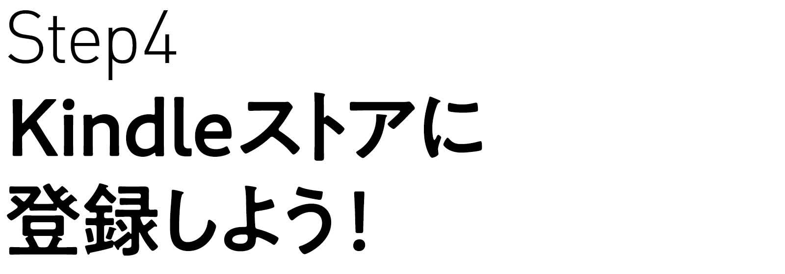
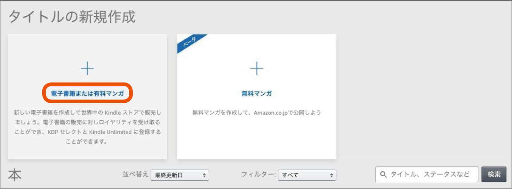

| KDPで、自分の電子書籍を１日で出版する方法。 | |
| TAPIRUS & 渋谷獏 | |
| TAPIRUS (2019) | |
Contents
Step1-でんでんエディターで原稿を作ろう！
Step2-でんでんコンバーターでePubを作ろう！
Step3-Googleスライドで表紙を作ろう！
Step4-Kindleストアに登録しよう！
Step5-Kindleストアに出版しよう！
奥付
はじめに
ちょうど去年の今頃に『iPhoneで出版するKDP』という電子書籍を出版しました。
こちらは「ライブドアブログでの作成」や「著作権・法律・モラル」｢ 固定型電子書籍の作成」なども載せてある充実の内容なのですが......｢難しくてよく分からん」とか「長げ〜よ」という声がチラホラ聞こえてきました。
で、本書では、一番オススメの「でんでんコンバーター」というWebサービスに話を絞り、なるべく余計な機能は説明せずに１日でそこそこ立派な ｢流動型の電子書籍｣ を作る方法をお伝えします。
前回の「紙の本の長さで222ページ」という厚みと違い、今回は薄いページ数なのでサクッと読めるハズです！
まず最初に、 でんでんエディター のサイトにアクセスしてください。
すると上のような、でんでんマークダウンという呪文のようなものがたくさん書かれてある画面が現れますが、本書では超初心者向けに最低限必要なマークダウンだけを使った作り方
をご紹介します！
使うマークダウンはこの５つ！
・見出し #
・改ページ ====
・ルビ { | }
・文字の強調 *
・一行アキ <p><br /></p>
小説のような単純な構造のものでしたら、この５つの呪文で充分です。
では、用意した小説の原稿に５つの呪文を付け足してみます。
上下で見比べてみると、｢#」や「====」などのマークダウンが足されているのが確認できると思います。
で、これをでんでんエディターで縦書き表示させると......。
こんな感じに表示されます。
タイトルの「鉄のハインリヒ」と本文の間の縦の罫線は、実際の電子書籍では改ページ扱いになります。
見出し「#」は数が少ないと大きな見出し、数が多いと小さな見出しになります。文字の強調「*」は、ひとつずつで挟むと傍点が付き、ふたつずつで挟むと文字が太字になります。
マークダウンという呪文を、前に付けたり挟んだりするだけでOKです。
書いてある呪文をすべて理解するのは少し難しいかもしれませんが、小説などで必要な５つの呪文 に絞ってしまえばとっても簡単でしょう？
原稿は最終的に「.txt」形式 になっていれば、でんでんエディターのWEB画面で書かずに、いつも自分が使っているテキストアプリで書いてもOKです。

もしファイル形式の事がよくわからない方は、WEB画面のでんでんエディターに打ち込んで（またはコピペして）ファイル保存をすれば自動的に「.txt」形式
のデータになりますよ〜。
これで、電子書籍の元になる原稿の完成です！
でんでんコンバーターでePubを作ろう！へつづく
まず最初に、 でんでんコンバーター のサイトにアクセスしてください。
前回でんでんエディターで作成した原稿を、でんでんコンバーターを使ってePubデータ
に変換してみましょう。
｢イーパブって何だ？」
そう思われた方も多いでしょう。
安心してください。いかがわしいお店とかではなく、世界中で使われている電子書籍の標準フォーマット
の事なのです！
どこの電子書籍ストアに出してもOKな「ePub3」 というデータが、でんでんコンバーターを使うと、すごく簡単に作れるんです！
まずは原稿をアップロードして、本のタイトルと作者名、縦書きか横書きか、本扉と目次を付けるのか、などをお好みでチェックして......。
あとはプレビューにチェックをいれて、変換ボタンを押すだけです！
変換されたデータは画面上に表示されますので、おかしなところがないか確認してください。
｢5d2de53079d0f.epub」みたいなランダムな英数字のePubデータ
がダウンロードされますが、｢.epub」は残して好きな名前に書き換えてください。（名前は半角英数字を使用した方がなにかと無難です）
これで、大扉や目次も備わった状態の、Amazon kindleストアに提出するためのePubデータができあがりました。
あとは表紙の画像さえあれば
、電子書籍として出版する事が可能ですよ！
Googleスライドで表紙を作ろう！へつづく
さて、｢原稿の準備→ePubを作成」ここまではパソコンで文字が打てれば誰でも簡単に作れるんですが、いちばんの鬼門がこの「表紙作成」
だと思います。
テキストデータと違って、作る人でかなり見た目に差が出ますからねぇ......。
本当はプロに頼むのが一番だと思うんですが、個人出版なのでそこまでお金をかけられないしPC操作も苦手という方に、ぼくはWebサービスの「Googleスライド」
をオススメします。
Googleにアカウントを作成
すれば「無料」
ですぐに使えるサービスです。
アカウント作成後に、
Googleスライド
のサイトにアクセスして「Googleスライドを使う」
を押してください。
で、新規で空白のページを１つ作り、ページ設定からカスタムを選んで好きな大きさのピクセル数を指定
してください。
ここでは、iPadのサイズ768×1024ピクセルの倍数
（面積は4倍）を指定しています。
次に背景に敷く、何かしらの画像を用意してください。
これは自分で撮影した写真画像でも良いですし、
pixabay.com
のようなCC0
（商用での無断使用可・改変も可のフリー画像）を扱っているサイトから用意してもOKです。
もちろん絵の得意な人は、自作のイラストを取り込んでもいいですし、シンプルな表紙が好みでしたら背景画像はなくてもOKです。
｢挿入ボタン」
から取り込んだ画像は、画像部分を２回叩く
（ダブルクリック）と中身をいじる事ができます。拡大・縮小をして好きな感じにトリミングしてください。
次に、｢テキストボックスボタン」
を選んで文字を打ちこみます。フォントの種類はあまり多くはないですが、テキストの文字色や大きさは自由に変える事ができます。
次に、｢図形ボタン」
を選んで帯を敷いてみましょう。帯の色や線の色も自由に変える事ができます。
先ほどと同じ要領で、文字を帯の上に打ち込めば表紙デザインの完成
です。
最後にファイルからJPEG画像を書き出せば、Kindleへ提出する表紙画像の完成
です。
Googleスライドで作成したデータは何度でも修正可能
ですので、プロ並み......とはなかなか難しいでしょうが、調整を繰り返して作成していけば素敵な表紙が作れると思いますよ！
Kindleストアに登録しよう！へつづく
※ファイル名を「cover.jpg」に変更して、前回のでんでんコンバーターでePub変換する時に原稿データと一緒に選んでもらえれば、表紙付きの電子書籍になります。表紙が内蔵されていれば、個人出版が可能な他の電子書籍ストアにも提出できます。

Step4は、ホントは相当ややこしいKDPへの登録
です。
ただし見本のキャプチャーの通りに打ち込めばOKですので、これも簡単にできますよ〜。
https://kdp.amazon.co.jp
まずは上のKDPのアドレスにアクセスしていただき、いつも自分がお買い物で使っているAmazonのメールアドレスとパスワードで「サインイン」
してください。
（登録がない方は、新規でAmazonの登録をしてください）
最初に規約書が出てくると思いますので「同意」ボタンを押し、｢本棚」
のページに進みます。
画面の上の方にある「ほにゃららさんのアカウント」
を押し、｢著者/出版社情報」
を日本語で打ち込みます。
終わったら「税に関する情報」
を押し、税に関するインタビューはすべて英語
で打ってください。（英語といっても名前とか住所だけなので、見本のように打てばOKです）
｢保存して続行」
を押すと、納税者番号の項目がでてきますので、こちらに自分のマイナンバー
を打ってください。

最後に色々なチェック項目が出てきますが、見本のようにチェックを入れておけばOKです。
｢提出」
を押すと元の画面に戻るので、あとは「保存」
を押せば登録の終了です。
ホントは細かく説明していくとかなりややこしいものですが、日本国籍の個人の方の登録
であれば、だいたいこんな感じで大丈夫だと思いますよ〜。
Kindleストアに出版しよう！へつづく
電子書籍のePubデータ、表紙画像、Kindleへの登録が済みましたら、あとはKindleにデータをアップ するだけです！

https://kdp.amazon.co.jp
また自分のKDPにサインインして、本棚で「タイトルの新規作成」
をしてください。
※去年から右側に「無料マンガ」の作成ボタンも付きましたが、マンガを描く人以外は無視でOKです。
で、｢Kindle本の詳細」
で本のタイトルを入れ、フリガナとローマ字を打ち込みます。
その他、サブタイトルやレーベルやシリーズなどの項目もありますが、これは入力しなくてもOKです。
版数は改訂版を出すこともあると思うので、最初に出す時に「１」
と入力しておきましょう。
著者名は本名でもペンネームでもOKです。

内容紹介を書いて、著作者の権利にチェックをして、キーワードを５つ入力。
自分の本の内容に近そうなカテゴリーを２つ選び、年齢層を選んで「保存して続行」
を押してください。
次に「Kindle本のコンテンツ」
で、デジタル著作権管理とページを読む方向にチェックを入れ、ePubデータと表紙画像をアップロードしてください。
最後に「Kindle本のプレビュー」
で中身を確認してください。このプレビューアーで見ておかしなところがなければ、ほぼそのままの感じで出版されます。
終わったら詳細に戻り「保存して続行」
を押してください。
次に「Kindle本の価格設定」
です。
一番上にでてくるKDPセレクトに登録すると、70%のロイヤリティと読み放題サービスへの登録
ができます。
ただし、これはAmazonとの専属契約
になりますので、契約を結んでいる90日間は他の電子媒体で同じ物を公表することはできません。（アナログの紙媒体はOK）
出版地域は、とくに問題がなければすべての地域にチェックを入れましょう。
日本の価格を基準にするために「Amazon.com」から「Amazon.co.jp」
に切り換えて入力してください。このとき、専属契約で70％
のロイヤリティを得たい方は「250円」以上の価格
を打ち込んでください。
あとは「Kindle本を出版」
を押せば終了です。
たいていの場合、次の日にはAmazonから「出版されましたよ〜」というメールが届き、Kindleストアに書籍が並んでいます。
説明はこれにて終了です。
５つのステップで誰でも簡単に電子書籍が出せます
ので、発表したい原稿をお持ちの方はぜひ試してみてください！
※万が一、出版後に誤字・脱字などが見つかった場合は、あわてずにデータの再アップロードを行ってください。たいてい数時間もすればデータが差し代わります。
KDPで、自分の電子書籍を１日で出版する方法。
2019年7月 発行
著者
渋谷獏
発行
TAPIRUS
©TAPIRUS 2019
本書の無断複写・複製は、著作権上の例外を除き禁じられています。